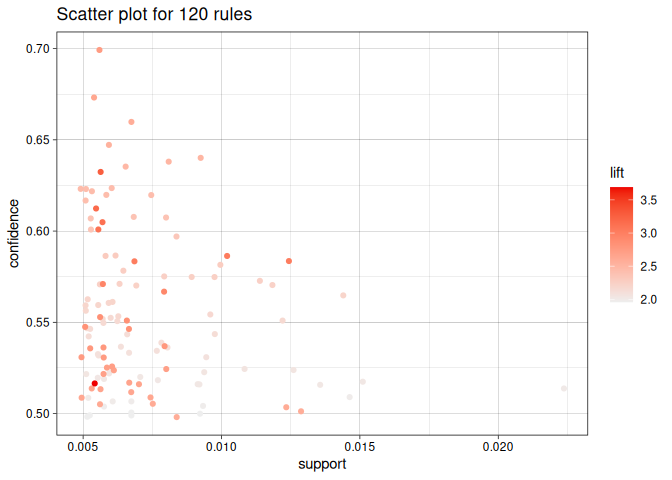
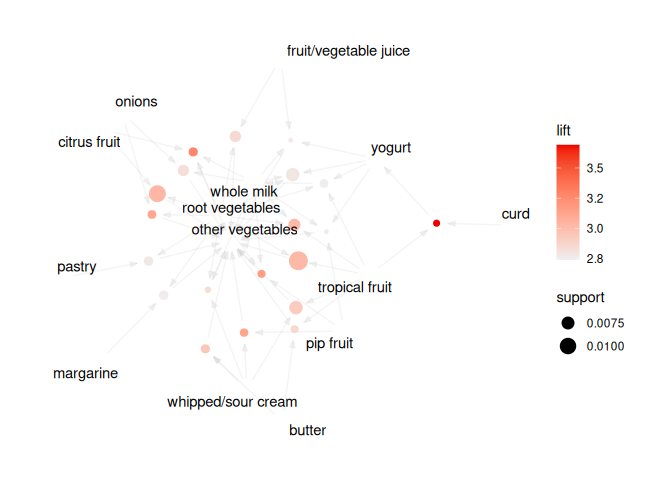

Maintainer: Michael Hahsler
Introduction
This R package extends package arules with various visualization techniques for association rules and itemsets. The package also includes several interactive visualizations for rule exploration.
The following R packages use arulesViz: arules, daltoolbox, fdm2id, rattle, TELP, tidylearn
To cite package ‘arulesViz’ in publications use:
Hahsler M (2017). “arulesViz: Interactive Visualization of Association Rules with R.” R Journal, 9(2), 163-175. ISSN 2073-4859. doi:10.32614/RJ-2017-047 https://doi.org/10.32614/RJ-2017-047. https://journal.r-project.org/archive/2017/RJ-2017-047/RJ-2017-047.pdf.
@Article{,
title = {arules{V}iz: {I}nteractive Visualization of Association Rules with {R}},
author = {Michael Hahsler},
year = {2017},
journal = {R Journal},
volume = {9},
number = {2},
pages = {163--175},
url = {https://journal.r-project.org/archive/2017/RJ-2017-047/RJ-2017-047.pdf},
doi = {10.32614/RJ-2017-047},
month = {December},
issn = {2073-4859},
}Features
- Visualizations using engines
ggplot2(default engine for most methods),grid,base(R base plots),htmlwidget(powered byplotlyandvisNetwork). - Interactive visualizations using
grid,plotlyandvisNetwork. - Interactive rule inspection with
datatable. - Integrated interactive rule exploration using
ruleExplorer.
Available Visualizations
- Scatterplot, two-key plot
- Matrix and matrix 3D visualization
- Grouped matrix-based visualization
- Several graph-based visualizations
- Doubledecker and mosaic plots
- Parallel Coordinate plot
Installation
Stable CRAN version: Install from within R with
install.packages("arulesViz")Current development version: Install from r-universe.
install.packages("arulesViz",
repos = c("https://mhahsler.r-universe.dev",
"https://cloud.r-project.org/"))Usage
Mine some rules.
library("arulesViz")
data("Groceries")
rules <- apriori(Groceries, parameter = list(support = 0.005, confidence = 0.5))## Apriori
##
## Parameter specification:
## confidence minval smax arem aval originalSupport maxtime support minlen
## 0.5 0.1 1 none FALSE TRUE 5 0.005 1
## maxlen target ext
## 10 rules TRUE
##
## Algorithmic control:
## filter tree heap memopt load sort verbose
## 0.1 TRUE TRUE FALSE TRUE 2 TRUE
##
## Absolute minimum support count: 49
##
## set item appearances ...[0 item(s)] done [0.00s].
## set transactions ...[169 item(s), 9835 transaction(s)] done [0.00s].
## sorting and recoding items ... [120 item(s)] done [0.00s].
## creating transaction tree ... done [0.01s].
## checking subsets of size 1 2 3 4 done [0.00s].
## writing ... [120 rule(s)] done [0.00s].
## creating S4 object ... done [0.00s].Standard visualizations
plot(rules)
plot(rules, method = "graph", limit = 20)
Interactive visualization
Live examples for interactive visualizations can be seen in Chapter 5 of An R Companion for Introduction to Data Mining.
References
- Michael Hahsler. arulesViz: Interactive visualization of association rules with R. R Journal, 9(2):163-175, December 2017.
- Michael Hahsler. An R Companion for Introduction to Data Mining: Chapter 5, Association Rule Visualization. Online Book. https://mhahsler.github.io/Introduction_to_Data_Mining_R_Examples/book/,
- Michael Hahsler, Sudheer Chelluboina, Kurt Hornik, and Christian Buchta. The arules R-package ecosystem: Analyzing interesting patterns from large transaction datasets. Journal of Machine Learning Research, 12:1977-1981, 2011.
- Michael Hahsler and Sudheer Chelluboina. Visualizing Association Rules: Introduction to the R-extension Package arulesViz (with complete examples).